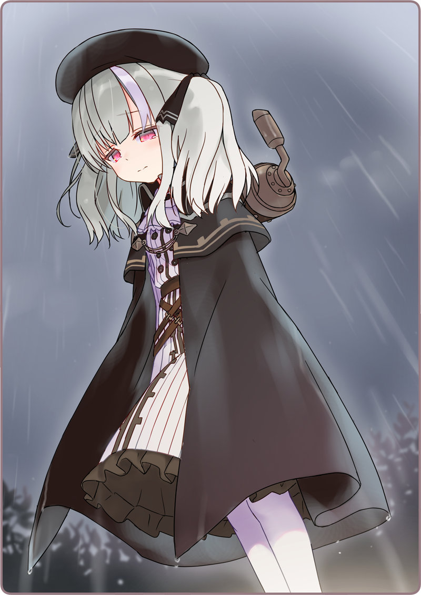

Haizakura: “Lalala~... lalalalala~”
Haizakura ngân nga một bài hát, và tất nhiên, nó bị lạc nhịp.
Haizakura: “Karasuba-san hễ lúc nào dọn dẹp là hát bài này… trông chị ấy vui lắm luôn!”
Đôi guốc em đang đi phát ra những tiếng lạch cạch trên con đường lát đá bị ướt đẫm vì cơn mưa.
Trên đầu em là tán dù cánh dơi
[1] bồng bềnh mềm mại.
Ở tay kia, em cầm một chiếc dù khác được gấp gọn gàng. Đó cũng là chiếc dù em mang cho Usami.
Haizakura: “Liệu ngày nào đó, mình sẽ có thể hát được như vậy chăng~...”
Bầu trời ken dày mây khiến ánh trăng chẳng thể chiếu rọi. Em bước đi hoàn toàn dựa vào ánh đèn đường sáng trắng.
Haizakura: “Mà sao, tối nay ngoài đường yên ắng quá ta.”
Em chỉ nghe thấy độc những tiếng mưa rơi.
Dù đã tối muộn, nhưng như mọi khi thì hẳn phải còn một lượng người nhất định qua lại trên đường, thế mà hôm nay lại chẳng có ai.
Haizakura: “Quả nhiên là do mưa rồi ha~~... Myu?”
Khi ấy em đang tới gần cầu Daikan nối quận Hai và quận Ba.
Đột nhiên cảm thấy có gì đó đang ở sau lưng mình, Haizakura quay đầu lại.
Haizakura: “Chà chà, chào buổi tối ạ!”
Đang đứng yên ngay kia, là một thứ lớn cỡ con chó và tỏa ra một màu bạc đùng đục.
Trên lưng nó là một cái thùng chở hàng, và con mắt duy nhất của nó đang lặng lẽ nhìn chằm chằm vào Haizakura.
Khói đen đang rỉ ra từ những khớp nối của nó…
＊ ＊ ＊
Haizakura: “Umyumyumyumyumyumyu————!!”
Usami: “Tiếng hét đó, là Haizakura?!”
Chúng tôi tức tốc chạy về phía quận Ba và tiếp cận cầu Daikan.
Từ đằng xa, chúng tôi nghe được một tiếng hét thất thanh.
Người đang chạy trước mặt tôi và Houkiboshi-san là Retzel-san liền tăng tốc hơn nữa, mặc cho tà váy bay phấp phới.
Haizakura: “Cứu… cứu em vớiiiiiiiii!!”
Phía trước, hình bóng Haizakura chạy bán sống bán chết cứ như đang bị thứ gì rượt đuổi dần hiện ra.
Hẳn là em đã bị ngã rất nhiều lần, bằng chứng là bộ kimono và mái tóc của em đều bị lấm bẩn, và em thậm chí còn cởi guốc ra nữa.
Phía sau em là…
Houkiboshi: “Quả nhiên là Gintarou!”
Có một vật thể đang phun ra những đợt khói đen và đuổi theo Haizakura.
Hình nhân Cơ khí bốn chân chuyên dụng để chở đồ—Gintarou—đã bị mất kiểm soát.
Retzel-san đạp mạnh xuống nền đất, rồi bay lên trong làn mưa.
Khi đang bay lướt qua Gintarou, trong một khắc, mũi dao cô ấy cầm phản quang.
Một tia sáng lóe lên—
Chi trước của Gintarou văng lên không trung.
Usami: “Óaaaaaaaaa?!”
Nó bay đến gần tôi với quá nhiều động năng, khiến tôi vô thức ôm đầu.
Gintarou tất nhiên không thể giữ nguyên tư thế mà sụp xuống kèm theo âm thanh của kim loại.
Haizakura: “Usa-sa~~~~~~~~~n~~~~~~!”
Haizakura vừa loạng choạng tới gần tôi vừa hét gọi tên tôi thật yếu ớt.
Usami: “N-Nào… ổn rồi mà.”
Haizakura: “E-Em sợ quá à~~~~~”
Tôi ôm thật chặt lấy cơ thể em.
Em cũng bám chặt lấy tôi mà nức nở.
Usami: “Thôi, giờ nó không đuổi theo em nữa đâu.”
Haizakura: “Myuuuuuuuuu……”
Gintarou đang vùng vẫy liên tục, chật vật di chuyển bằng các chi còn lại.
Mới nãy nó còn là một Hình nhân mất kiểm soát đáng sợ, vậy mà giờ đây nhìn nó sao thật đáng thương.
Haizakura: “Aaa…”
Usami: “Haizakura?”
Haizakura: “Trông bạn ấy… đau đớn quá…”
Em chầm chậm tiến lại gần Gintarou.
Houkiboshi: “Nó cũng đang bối rối lắm. Bị ép khởi động, thật tội nghiệp…”
Houkiboshi-san cũng tiếp cận và nhìn nó bằng ánh mắt thương cảm.
Houkiboshi: “Em đã đánh mất vai trò… và không còn biết nên làm gì nữa phải không?”
Haizakura: “Myu…”
Houkiboshi: “Hai-chan?”
Em từ từ vươn tay ra.
Rồi nhẹ nhàng, chạm vào cơ thể Gintarou.
Haizakura: “.........”
Đôi mắt của Haizakura tỏa ra ánh đỏ mờ nhạt.
Như đang phản ứng với điều đó, con mắt duy nhất của Gintarou cũng tỏa ánh đỏ.
Sau đó…
Haizakura: “... Đình chỉ khởi động.”
Đột nhiên Gintarou ngừng cử động, phát ra một âm thanh cơ khí đặc thù.
Houkiboshi: “Em vừa… kết nối với nó sao?”
Haizakura: “D-Dạ… không hiểu sao… em có cảm giác mình phải làm thế~…”
Houkiboshi: “Em nhớ tốt thật đấy…”
Haizakura: “Myu?”
Houkiboshi: “Không có gì, không có gì đâu.”
Haizakura: “A, t-tiện đây… vị vừa mới cứu em là…”
Em ngẩng mặt lên, cơ hồ vừa chợt nhớ ra gì đó.
Tuy vậy, Retzel-san đã không còn ở trên cầu Daikan nữa rồi.
Mưa bắt đầu rơi như trút nước.
Cô ấy đang đứng trên một ngọn đèn đường, để mặc bản thân bị ướt.
Haizakura: “Đ-Đứng trên đó nguy hiểm lắm!”

Haizakura: “... myu?”
Cô ấy lặng lẽ quay lưng lại, dẻo dai như một chú mèo.
Dù chỉ thoáng qua, song tôi đã thấy ánh mắt đượm u sầu của cô.
Haizakura: “.........”
Và rồi, cô ấy một mình tiến vào màn đê—
Haizakura: “Retzel-san?!”
Bất thần, em cất giọng kinh ngạc, gọi lên một cái tên.
Usami / Houkiboshi: ““Hảảảảảảảảảảảảảả?!!!””
Theo sau đó, là tiếng của một vật rơi xuống mặt đất.
Usami: “A, ngã rồi kìa.”
Retzel-san vốn định rời đi, thì bị trượt chân và cứ thế đáp xuống nền đường.
Đầu mũi đỏ lừ, cô ấy nhìn chúng tôi với đôi đồng tử rơm rớm nước mắt.
Thấy cô như vậy, Haizakura liền chạy vội tới.
Haizakura: “Chào buổi tối, Retzel-san.”
Haizakura: “Có cảm giác như lâu lắm rồi mình mới gặp lại bạn ấy. Myumyumyu… tụi mình chia tay từ khi nào ấy nhỉ. Chuyện đó mình chẳng thể nào nhớ nổi nữa~...”
Lệ bắt đầu tuôn thành dòng.
Haizakura: “Myumyumyu!!!”
Cô ấy ôm cơ thể nhỏ nhắn của em mà khóc hết nước mắt.
Usami: “Haizakura… nhớ ra rồi kìa…”
Không hiểu sao nhìn thấy khung cảnh này, tôi cũng muốn khóc theo.
Houkiboshi: “Có thể là, đứa trẻ này đã kích thích con bé.”
Houkiboshi-san đang xoa xoa cơ thể Gintarou.
Houkiboshi: “
Hình nhân Tự hành có thể kết nối với
Hình nhân Cơ khí… Bằng cách liên kết như vậy, chúng mình có thể thấy được những gì đứa trẻ này từng trải qua. Có lẽ cậu chàng đã được yêu thương tới không ngờ…”
Usami: “Tốt quá… thật tốt quá…”
Houkiboshi: “Nếu được sửa lại… có lẽ một ngày kia em sẽ có thể trở lại làm việc được đấy…”
Những lời Houkiboshi-san nói mới thấm thía làm sao.
Lúc bấy giờ tôi mới nhận ra, trời đã tạnh mưa tự khi nào, liền đó một cơn gió mát lành thổi qua.
Chỉ có tiếng khóc của Retzel-san vẫn đang ôm Haizakura là còn vang vọng.
[1] Dù hình khum, những múi dù khi mở ra trông giống cánh con dơi căng ra, xưa kia nam giới thường dùng.

 “Onee-sama…!”
“Onee-sama…!”